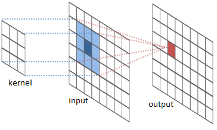

Index
Motivation and Background
The goal of Intel Labs' River Trail project, also known as Parallel JavaScript, is to enable data parallelism in web applications. In a world where the web browser is the user's window into computing, browser applications must leverage all available computing resources to provide the best possible user experience. Today web applications do not take full advantage of parallel client hardware due to the lack of appropriate programming models. River Trail puts the parallel compute power of the client's hardware into the hands of the web developer while staying within the safe and secure boundaries of the familiar JavaScript programming paradigm. River Trail gently extends JavaScript with simple deterministic data-parallel constructs that are translated at runtime into a low-level hardware abstraction layer. By leveraging multiple CPU cores and vector instructions, River Trail programs can achieve significant speedup over sequential JavaScript.
An open-source prototype implementation of River Trail for Firefox is available on GitHub (see the quick start instructions). This prototype implements a version of the River Trail API that compiles to OpenCL and can be executed on CPUs and GPUs.
This tutorial is a gentle introduction to the River Trail language extensions and API.
The ParallelArray type
The central component of River Trail is
the ParallelArray
type. ParallelArray objects are
essentially ordered collections of scalar values.
Multi-Dimensional and Uniform
ParallelArray objects can represent
multi-dimensional collections of scalars.
All ParallelArray objects have
a shape that succinctly describes the
dimensionality and size of the object.
The shape of a ParallelArray is specified as
an array of numbers in which the value of the ith
element is the number of elements in the ith
dimension of the ParallelArray. The number
of dimensions of a ParallelArray is the
number of elements in its shape array.
For instance, a 4x5 matrix of numbers can be represented
as a ParallelArray object whose shape
is [4, 5]. Similarly, a 2D image in which
each pixel has an RGBA value can be represented as
a ParallelArray object with shape [h,
w, 4]. (The 4 comes from the fact
that an RGBA value is 4 bytes, one for each of the red,
green, and blue channels and one for the alpha channel.)
An empty ParallelArray has
shape [0], and a
one-dimensional ParallelArray with three
elements has shape [3].
Multi-dimensional ParallelArrays are also required to
be uniform (also
called rectangular). That is, the length of all
inner arrays in a particular dimension must be the
same. For example,
[[0, 1], [2], [3, 4]] would be non-uniform
and is not allowed.
Immutable
ParallelArrays are immutable once they are
created. ParallelArrays are manipulated by
invoking methods on them, which produce and return new
ParallelArray objects.
Constructors
ParallelArray objects can be created in a variety of ways.
To create an empty ParallelArray, call the
constructor with no arguments:
// Create an empty ParallelArray
var pa0 = new ParallelArray();
We can pass a regular JavaScript array to
the ParallelArray constructor, as well.
Here, we are creating a ParallelArray out of
a nested JS array. The inner arrays will also become
ParallelArrays.
// Create a ParallelArray out of a nested JS array.
// Note that the inner arrays are also ParallelArrays.
var pa1 = new ParallelArray([ [0,1], [2,3], [4,5] ]);
// pa1 has shape [3,2]
We can also create a new ParallelArray
object from an existing one. The below example creates the
new ParallelArray pa2 from an existing
one, pa1. Since ParallelArrays are
immutable, it does not matter to us at this point whether this creates
a copy of pa1 or whether it simply returns a new
reference to pa1. We are guaranteed that
both pa1 and pa2 will have the same
structure and the same data in them for their lifetime.
// Create a ParallelArray from another ParallelArray
var pa2 = new ParallelArray(pa1);
// pa2 has the same contents and shape as pa1
We can also pass multiple arrays to
the ParallelArray constructor. Here, the
arguments [0, 1] and [2, 3] each
have the shape [2]. The
resulting ParallelArray object will therefore
have the shape [2,2]: it contains two
elements, each of which contain two elements.
// Create a ParallelArray from several other
// ParallelArrays
var pa3 = new ParallelArray([0,1], [2,3]);
// pa3 has shape [2,2]
Yet another way to create ParallelArray
objects is by using a comprehension
constructor. We specify the length of
the ParallelArray we want to construct, and
an elemental function. This elemental function
is invoked once for each element in the result array, with
that element's index as its argument.
In the below example, the length is 3 and the
elemental function is function(i) { return [i, i+1];
}. For every index i, the elemental
function returns a two-element array consisting
of i and i+1. After the
elemental function has been invoked for
every i, we have the resulting
new ParallelArray [[0, 1], [1, 2], [2,
3]] (where the inner arrays are
all ParallelArrays as well). Note that the
order in which the calls to the elemental function occur
is irrelevant. We will learn more about writing elemental
functions in the next section.
// Create a ParallelArray of length 3 and
// shape [3,2], using the "comprehension" constructor
var pa4 =
new ParallelArray(3, function(i){return [i, i+1];});
The comprehension constructor can also create
multi-dimensional arrays. We need to supply a shape
vector instead of a length as the first argument to
the constructor, and an elemental function that takes a
vector index as an argument. In this case,
the shape we specify is [3,2], and the
elemental function will be invoked with a two-element
vector argument iv:
// Create a two-dimensional ParallelArray with shape
// [3,2] using the comprehension constructor
var pa5 = new ParallelArray([3, 2],
function(iv) { return iv[0] * iv[1]; });
Finally, we can also create a
new ParallelArray object directly from an
HTML5 <canvas> object. The canvas
object is used for drawing 2D shapes, pictures and video
on a web page. We will see how this is useful later on,
when we build a video web app.
// This creates a ParallelArray with shape
// [h, w, 4],
// corresponding to the height and width of the
// canvas and the RGBA value for each pixel.
var pa6 = new ParallelArray(document.createElement("canvas"));
Methods
ParallelArray objects created with the above
constructors come with several methods to manipulate
them. These methods typically produce a
new ParallelArray object (except
the reduce method, which produces a scalar
value).
Map
The first method we will discuss is map,
probably the most prominent and well-known data-parallel
construct. The map method expects a function
as its first argument that, given a single value, produces
a new value as its result. We call such
functions elemental functions, since they are
used to produce the elements of
a ParallelArray object. The map
method computes a new ParallelArray object
from an existing ParallelArray object by
applying the provided elemental function to each element
of the source array and storing the result in the
corresponding position in the result array. Let us look
at a simple example:
var source = new ParallelArray([1,2,3,4,5]);
var plusOne = source.map(function inc(v) { return v+1; });
Here, we define a new ParallelArray
object source that contains the numbers 1 to
5. We then call the map method of our source
array with the function inc that returns its
argument, incremented by one. Thus, plusOne
contains the values 2 to 6. Also note
that plusOne has the same shape as the
original array source. The map
method is shape-preserving.
As you may have noticed, the map method does
not provide an index to the elemental function it
calls. Not using an index has the advantage that no
indexing errors can be made. However, this added
simplicity comes at the cost of expressiveness:
with map, one can not inspect neighboring
values in the array, as is commonly required for
convolution-style computations.
Combine
The combine method addresses this
issue. Like map, combine can be
used to compute a new ParallelArray object by
inspecting an existing ParallelArray object's
elements. Unlike map, the elemental function
of combine is provided with access to the
current index in the source array, along with a reference
to the source array itself. Let us revisit the increment
example from the previous section. When
using combine, the program can be expressed
as follows:
var source = new ParallelArray([1,2,3,4,5]);
var plusOne =
source.combine(function inc(i) { return this.get(i)+1; });
As before, we first produce our source array holding the
values 1 to 5. We then apply the combine
method using a slightly modified version of
the inc function. It now expects an
index i as
argument. Furthermore, source is bound to the
variable this within the elemental function's
body. We can access the value at index i of
the source ParallelArray by calling
the get method with index i as
argument.
As this example shows, using combine requires
more code to implement inc. However, we have
gained expressiveness. As an example, consider the
following code, which reverses the order of elements in an
array:
var source = new ParallelArray([1,2,3,4,5]);
var reverse = source.combine(function rev(i) {
return this.get(this.length-i[0]-1); });
In the elemental function rev, we exploit the
access to the index that combine provides to
compute the reversed index in the source array. Note that
computations are driven by the index position in
the result array, not the source array. We
therefore use the
expression this.length-i[0]-1 to compute the
source index of the reversed element for
position i in the result array. This code
makes use of the length property of the
ParallelArray object that gives the number of elements in
the array.
It is important to note here that the index i
is not a scalar value but actually a vector of indices. In
the above example, we therefore have to
use i[0] in the computation of the source
index.
So far, all our examples have used one-dimensional
arrays, and the use of an index vector
in combine has been of no
help. However, ParallelArray objects in River
Trail can have multiple dimensions. The map
method always operates on the outermost dimension only,
that is, on the dimension that corresponds to the first
element of the shape vector. With combine,
the programmer can choose how deep to traverse, using an
optional first argument to the combine
method. As an example, let us generalise the above
array-reversal operation into a transpose operation on
matrices:
var source = new ParallelArray([4,4], function (iv) {
return iv[0]*iv[1]; });
var transpose = source.combine(2, function rev(iv) {
return this.get([this.getShape()[0]-iv[0]-1,
this.getShape()[1]-iv[1]-1]); });
We use a depth of 2 and, consequently, the index
vector iv passed to the elemental function
contains two indices, corresponding to the two outermost
dimensions of the source array. This example also uses
the getShape method, which is the
multi-dimensional counterpart to length: it
returns a vector that gives the length for each dimension
of a ParallelArray
object. With this.getShape()[0]-iv[0]-1, we
compute the index at the transposed position within the
source array for the first dimension. Note here
that get also accepts an index vector as
argument.
Reduce
So far we have concentrated on parallel patterns that
produce a new array out of an existing
array. The reduce method implements another
important parallel pattern: reduction operations. As the
name suggests, a reduction operation reduces the elements
in an array to a single result. A good example to start
with is computing the sum of all elements of an array:
var source = new ParallelArray([1,2,3,4,5]);
var sum = source.reduce(function plus(a,b) {
return a+b; });
As the example shows, the reduce method
expects as its first argument an elemental function that,
given two values as arguments, produces a new value as its
result. In our example, we use plus, which
adds two values, as the elemental function. A reduction
over plus then defines the sum
operation.
Note here that the reduction may be computed in any order. In particular, this means that the elemental function has to be commutative and associative to ensure deterministic results. The River Trail runtime will not check this property, but results might be different between calls even on the same platform.
Scan
The reduce operation reduces an array into a
single value. For some use cases, it can be interesting to
also store the intermediate results of a reduction. An
example is the prefix-sum operation that, given a
vector of numbers, computes another vector of numbers that
each position contains the sum of all elements of the
source vector up to that position. To implement this
parallel pattern, ParallelArrays support a
scan method.
var source = new ParallelArray([1,2,3,4,5]);
var psum = source.scan(function plus(a,b) { return a+b; });
Here, we again use the plus elemental
function from the previous reduction example. However,
when used with scan, it now produces the
prefix-sum array of the source array, which
is the ParallelArray [1, 3, 6, 10,
15]. If we were only interested in the last
element, 15, we could have just
called reduce; by using scan, we
also get all the intermediate results.
The same rules of parallel execution that apply
to reduce also apply to scan:
the result of a scan operation can be
computed in parallel, and therefore, we only guarantee a
deterministic result if the elemental function is
commutative and associative.
Scatter
We have seen that combine can be used to
produce new arrays out of existing arrays. However,
with combine we must define for each index
position in the result array how it is to be computed from
the source array. Sometimes, this mapping is difficult to
specify or costly to compute. Instead, it is preferable to
specify for a certain source index where it
should be stored in the result array. This pattern is
supported by the scatter method in River
Trail. Here is an example:
var source = new ParallelArray([1,2,3,4,5]);
var reorder = source.scatter([4,0,3,1,2]);
We first compute our source array source. In
a second step, we apply the scatter method
with a single argument: the scatter
vector [4,0,3,1,2]. Thereby, we specify
that the first element of source is to become
the fifth element of the result (indexing starts with 0),
the second value in source becomes the first
in the result, and so on. Overall, the above example
produces the array [2, 4, 5, 3, 1].
What happens if we assign two source values to the same
position of the result? As scatter is
potentially computed in parallel, the result would be
non-deterministic. Therefore, by default, the River Trail
runtime will throw an exception when result positions
conflict. However, in practice, conflicts often are
meaningful and can be deterministically resolved. For
these scenarios, scatter accepts an optional
second argument: a conflict function that,
given two conflicting values, produces a single
resolution.
On closer inspection, a conflict function is not enough to produce a fully specified result. If the scatter vector contains the same target index more than once, inevitably it will not fill all indices of the target array. To remedy this, we also allow the programmer to specify an optional default value that will be used for all index positions that are not defined otherwise.
var source = new ParallelArray([1,2,3,4,5]);
var reorder = source.scatter([4,0,3,4,2], 3, function max(a, b) {
return a>b?a:b; });
In the above example, the first and fourth element of the
source array are both written to the fifth element of the
result array, and no value is written to the second index
position. However, we provide the default
of 3 as the second argument
to scatter. Lastly, we use a maximum as the
conflict resolution function. Thus, the fifth position in
the result is the maximum of 1
and 4, which is 4. Overall, we
get [2, 3, 5, 3, 4].
scatter has a final optional argument: the
result length. By default, the length of the result will
be the same as the source array's. Using a scatter index
outside of the result's length will lead to a range
error. To spread elements out or reduce the total number
of elements, the new length has to be explicitly provided.
Putting it all together, we can implement
a histogram by means of scatter. A
histogram computes the frequency or number of occurrences
of a value within a sample. Let's assume we have some
source data that contains values from zero to five. We
also need a second vector that contains weights. We will
just use a vector of ones here. Here is the setup:
var source = new ParallelArray([1,2,2,4,2,4,5]);
var ones = source.map(function one(v) { return 1; });
We can then implement a histogram by scattering the ones
we have just produced to the correct buckets, that is, we
interpret the source data as scatter indices. Conflicts
are resolved by adding values, ultimately counting how
many times a one has been written to a certain
position. The natural default value
is 0. Lastly, we have to provide a new
length, since we reduce multiple source values into a
single frequency value. Here is what it looks like:
var hist = ones.scatter(source,
0,
function plus(a,b) { return a+b;},
6);
Filter
With scatter, we can now create
new ParallelArray objects by reordering the
elements of an existing ParallelArray
object. However, the result still contains all elements of
the source array, modulo conflicts. We are still missing a
means to simply drop elements from an array. This is where
the filter method comes in. It expects an
elemental function as its sole argument. The elemental
function has the same signature as
combine: it gets the current index as an
argument, and the source object is bound
to this within its body. However, unlike
with combine, the elemental function passed
to filter is expected to return a truth value
that indicates whether the source array's element at the
given index position should be included in the result. Let
us look at an example:
var source = new ParallelArray([1,2,3,4,5]);
var even = source.filter(function even(iv) {
return (this.get(iv) % 2) == 0; });
As before, we first produce a source array containing the
values one to five. Next, we apply the filter
method using even as the elemental function,
which returns true for all even
elements. Thus, we remove all odd elements from the source
array, leading to the result [2, 4].
Parallel Video Filters with River Trail
In this hands-on tutorial, we will use River Trail to parallelize the computationally intensive parts of a HTML5 video application. If you haven't already, read the above API method descriptions and come back. It is also a good idea to have the method descriptions to refer to while reading through this tutorial.
Setup
Download and Install
If you're using Windows or Linux, you will need to download and install the Intel OpenCL SDK if you haven't done so already (click the "Free Download" button on that page and fill out the form on the following page). Mac users can skip this step, since OpenCL is already packaged as part of OS X.
Also, if you have not done so already, download and install the River Trail Firefox extension. For this tutorial, you do not need to build the extension from source; you only need to install the pre-built extension.
Also, clone the River Trail repository, or download and unzip a snapshot of it.
Finally, we will use the 10-minute
film Big Buck
Bunny for the tutorial. Download
an .ogv
file of the movie, and save it in
the tutorial/src/media/ directory of the
River Trail repository that you just cloned or
unzipped.
Serving the Tutorial Files
Because of Firefox's security policies, for this tutorial
you will need to run a web server that serves files from
the River Trail directory. For instance, if you have
Python installed, running the shell command python
-m SimpleHTTPServer in the directory where you
cloned or unzipped the River Trail repository is one way
to quickly serve files:
~/repos/RiverTrail$ python -m SimpleHTTPServer
Serving HTTP on 0.0.0.0 port 8000 ...
Note that you need to serve the files from the
top-level directory where you cloned or unzipped
the repo, not the tutorial/src/ directory!
You should then be able to navigate to,
e.g., http://localhost:8000/tutorial/src/
in your browser and see the tutorial skeleton.
Verify
To verify that the River Trail extension is installed and talking to OpenCL, go to the interactive shell. You should see a message saying:
River Trail Extension loaded. Enabling parallel
mode...
If you see this, then the extension has been installed correctly. However, if you only see something like:
River Trail not found. Enabling sequential
mode...
then the extension is disabled or not installed, or not interfacing with OpenCL properly. In the Firefox Add-ons Manager, make sure that the extension is installed and enabled, and try reloading the page. If you just installed OpenCL, try disabling and re-enabling the extension.
Once the extension is installed and working correctly, you can try running the sample applications before moving on to the rest of this tutorial.
The Skeleton
In the River Trail repo, the tutorial/src/
directory contains a skeleton for the video application
that you can start with. If you've followed the above
directions for serving the tutorial files, you should
already be able to load up,
e.g., http://localhost:8000/tutorial/src/
in Firefox and see the default screen for the application
skeleton: The large box in the
center is
a canvas
that is used for rendering the video output. The video
input is either an HTML5 video stream embedded in
a video
tag, or live video captured by a webcam.
On the right of the screen, you will see the various filters that can applied to this input video stream: sepia toning, lightening, desaturation, and so on. Click on the box in the center screen to start playback of the Big Buck Bunny video and try out these filters. To switch to webcam video, click the "Webcam" toggle in the top left corner.
The sequential JavaScript versions of the filters on the right are already implemented. In this tutorial, we will implement the parallel versions using River Trail. Before we dive into implementation, let's look at the basics of manipulating video using the Canvas API.
Manipulating Pixels on Canvas
Open up tutorial/src/main-skeleton.js in your
favorite code editor. This file implements all the
functionality in this web application except the filters
themselves. When you load the page,
the doLoad function is called after the
body of the page has been loaded. This function sets up
the drawing contexts, initializes the list of filters (or
kernels), and assigns a click event handler for the output
canvas.
The computeFrame function is the workhorse
that reads an input video frame, applies all the selected
filters on it, and produces an output frame that is
written to the output canvas context. The code below
shows how a single frame from an HTML video element is
drawn to a 2D context associated with a canvas
element.
output_context.drawImage(video, 0, 0, output_canvas.width,
output_canvas.height);
After this video frame is drawn to canvas, we need to
capture the pixels so that we can apply our filters. This
is done by calling
getImageData on the context containing the image we want to
capture.
frame = output_context.getImageData(0, 0, input_canvas.width,
input_canvas.height);
len = frame.data.length;
w = frame.width;
h = frame.height;
Now we have
an ImageData
object called frame. The data
attribute of frame contains the pixel
information, and the width
and height attributes contain the dimensions
of the image we have captured.
The data attribute contains RGBA values for
each pixel in a row-major format. That is, for a frame
with h rows of pixels and w columns, it
contains a one-dimensional array of length w
* h * 4, as shown below:

So, for example, to get the color values of a pixel in the 100th row and 50th column in the image, we could write the following code:
var red = frame.data[100*w*4 + 50*4 + 0];
var green = frame.data[100*w*4 + 50*4 + 1];
var blue = frame.data[100*w*4 + 50*4 + 2];
var alpha = frame.data[100*w*4 + 50*4 + 3];
To set, for example, the red value of this pixel, simply
write the new value at the offset shown above in
the frame.data buffer.
Sepia Toning
Sepia toning is a process performed on black-and-white print photographs to give them a warmer color. This filter simulates the sepia toning process on digital photographs or video.
Let us first look at the sequential implementation of this
filter in the function
called sepia_sequential
in tutorial/src/filters-skeleton.js.
function sepia_sequential(frame, len, w, h, ctx) {
var pix = frame.data;
var avg = 0; var r = 0, g = 0, b = 0;
for(var i = 0 ; i < len; i = i+4) {
r = (pix[i] * 0.393 + pix[i+1] * 0.769 + pix[i+2] * 0.189);
g = (pix[i] * 0.349 + pix[i+1] * 0.686 + pix[i+2] * 0.168);
b = (pix[i] * 0.272 + pix[i+1] * 0.534 + pix[i+2] * 0.131);
if(r > 255) r = 255;
if(g > 255) g = 255;
if(b > 255) b = 255;
if(r < 0) r = 0;
if(g < 0) g = 0;
if(b < 0) b = 0;
pix[i] = r;
pix[i+1] = g;
pix[i+2] = b;
}
ctx.putImageData(frame, 0, 0);
}
Recall that the frame.data buffer contains
color values as a linear sequence of RBGA
values. The for loop
in sepia_sequential iterates over this
buffer, and for each pixel it reads the red, green and
blue values (which are
in pix[i], pix[i+1],
and pix[i+2], respectively). It computes a
weighted average of these colors to produce the new red,
green, and blue values for that pixel. It then clamps the
new red, green and blue values to the range [0, 255] and
writes them back into the frame.data
buffer. When the loop is finished, we have replaced the
RGB values for all the pixels with their sepia-toned
values and we can now write the image back into the output
context ctx with
the putImageData
method. The result should look like this (image on the
left is the original frame, image on the right is the
output):


Can we make this parallel?
If you look closely at the sepia_sequential
function above, you'll notice that each pixel can be
processed independently of all other pixels, as its new
RGB values depend only on its current RGB
values. Furthermore, each iteration of
the for loop does not produce or consume side
effects. This makes it easy to parallelize this operation
with River Trail.
Recall that the ParallelArray type has a
constructor that takes a canvas object as an argument and
returns a freshly minted ParallelArray object
containing the pixel data from that canvas.
var pa = new ParallelArray(canvas);
This creates a
three-dimensional ParallelArray pa
with shape [h, w, 4] that looks like the
following:

So, for the pixel on the canvas at coordinates (x,
y), pa.get(x, y, 0) will contain the
red value, pa.get(x, y, 1) will contain the
green value, and pa.get(x, y, 2) will contain
the blue value. In computeFrame, we create a
new ParallelArray from this canvas:
else if (execution_mode === "parallel") {
frame = output_context.getImageData(0, 0, input_canvas.width, input_canvas.height);
stage_output = stage_input = new ParallelArray(input_canvas);
w = input_canvas.width; h = input_canvas.height;
}
Here, stage_input and stage_output are
ParallelArray objects that contain the input
and output pixel data for each filtering "stage". Now
let's look at the code that causes the filters to be
applied:
if(execution_mode === "parallel") {
switch(filterName) {
...
case "sepia":
/* Add your code here... */
break;
...
}
// Make this filter's output the input to the next filter.
stage_input = stage_output;
}
To implement a particular filter, we add code to produce a
new ParallelArray object containing the
transformed pixel data and assign it to
stage_output. For example, for the sepia
filter, we would write:
case "sepia":
stage_output = /* new ParallelArray containing
transformed pixel data */;
break;
Now, all we have to do above is produce a
new ParallelArray object on the right-hand
side of the statement above. We can produce this
new ParallelArray one of two ways: by using
the powerful ParallelArray constructor, or by
using the combine method. Let us look at the
constructor approach first.
Recall that the comprehension constructor has the following form:
var pa = new ParallelArray(shape_vector, elemental_function,
arg1, arg2, ...);
where elemental_function is a JavaScript
function that produces the value of an element at a
particular index in pa.
Recall that the input to our filter stage_input is a
ParallelArray with shape [h, w,
4]. You can think of it as a two-dimensional
ParallelArray with shape [h, w]
in which each element (which corresponds to a single
pixel) is itself a ParallelArray of
shape [4]. The
output ParallelArray we will produce will
have this same shape: we will produce a new
ParallelArray of shape [h, w] in
which each element has a shape of
[4], thereby making
the ParallelArray have a final shape
of [h, w, 4]. We can do so as follows:
case "sepia":
stage_output = new ParallelArray([h, w], kernelName, stage_input);
break;
The first argument, [h, w], specifies the
shape of the new ParallelArray we want to
create. kernelName is the elemental function
for the sepia filter (which we will talk about in a
moment), and stage_input is an argument to
this elemental function. Hence this line of code creates a
new ParallelArray object of shape [h,
w] in which each element is produced by executing
the function kernelName. This
new ParallelArray is then assigned
to stage_output.
Finally, we have to write the elemental function that
produces the color values for each pixel. We can think of
it as a function that, when supplied indices, produces
the ParallelArray elements at those
indices.
Open the
file tutorial/src/filters-skeleton.js in your
editor and find the stub for
the sepia_parallel function:
function sepia_parallel(indices, frame) {
/* Add your code here... */
}
The first argument indices is a vector of
indices from the iteration space [h,
w]. indices[0] is the index along the
1st dimension (from 0 to h-1)
and indices[1] is the index along the 2nd
dimension (from 0 to w-1).
The frame argument is
the ParallelArray object that was passed as
an argument to the constructor above.
Now let's fill in the body of the elemental function:
function sepia_parallel(indices, frame) {
var i = indices[0];
var j = indices[1];
var old_r = frame[i][j][0];
var old_g = frame[i][j][1];
var old_b = frame[i][j][2];
var a = frame[i][j][3];
var r = old_r*0.393 + old_g*0.769 + old_b*0.189;
var g = old_r*0.349 + old_g*0.686 + old_b*0.168;
var b = old_r*0.272 + old_g*0.534 + old_b*0.131;
return [r, g, b, a];
}
In this code, we grab the indices i
and j and read the RGBA values from the
input frame. Then, just like in the
sequential version of the code, we mix these colors and
return a four-element array consisting of the new color
values for the pixel at position (i, j).
And that's it. After filling in
the sepia_parallel implementation, select the
"River Trail" toggle on the top right of the app screen
and play the video (perhaps after restarting your web
server). You should see the same sepia toning effect you
saw with the sequential implementation.
The River Trail compiler takes your elemental function and parallelizes its application over the iteration space. Note that you did not have to create or manage threads, write any non-JavaScript code, or deal with race conditions and deadlocks.
We could have also implemented the sepia filter by
calling the combine method on
the stage_input ParallelArray. As
an optional exercise, try implementing a version of the sepia
filter using combine.
One last thing to note: although the sepia filter is being
applied to every pixel in parallel, instead of in a
sequential loop as before, there may not be any obvious
parallel speedup, because the cost of allocating
new ParallelArrays overtakes the advantage of
parallel speedup for this particular filter. In general,
parallel execution is worthwhile only when the amount of
work done is enough to offset the overhead of doing so.
Next, we'll look at a more sophisticated video filter for
which parallel execution is more worth the cost.
Stereoscopic 3D
Let's consider a slightly more complicated filter: one that transforms the input video stream into 3D in real time. Stereoscopic 3D is a method of creating the illusion of depth by simulating the different images that a normal pair of eyes (see binocular disparity). In essence, when looking at a three-dimensional object, our eyes each see a slightly different 2D image due to the distance between them on our head. Our brain uses this difference to extract depth information from these 2D images. To implement stereoscopic 3D, we will use this same methodology: we present two 2D images, each one slightly different from the other to the viewer's eyes. The difference between these images—let's call them left-eye and right-eye images—are two-fold. Firstly, the right-eye image is offset slightly to the left in the horizontal direction. Secondly, the red channel is masked off in the right-eye image and the blue and green channels are masked off in the left-eye image. The result looks something like the following (image on the left is the original, image on the right is the 3D version):


The function A3D_sequential
in tutorial/src/filters-skeleton.js
implements a sequential version of the stereoscopic 3D
filter. Let's look at this sequential implementation:
function A3D_sequential(frame, len, w, h, dist, ctx) {
var pix = frame.data;
var new_pix = new Array(len);
var r1, g1, b1;
var r2, g2, b2;
var rb, gb, bb;
for(var i = 0 ; i < len; i = i+4) {
var j = i-(dist*4);
if(Math.floor(j/(w*4)) !== Math.floor(i/(w*4))) j = i;
r1 = pix[i]; g1 = pix[i+1]; b1 = pix[i+2];
r2 = pix[j]; g2 = pix[j+1]; b2 = pix[j+2];
var left = dubois_blend_left(r1, g1, b1);
var right = dubois_blend_right(r2, g2, b2);
rb = left[0] + right[0] + 0.5;
gb = left[1] + right[1] + 0.5;
bb = left[2] + right[2] + 0.5;
new_pix[i] = rb;
new_pix[i+1] = gb;
new_pix[i+2] = bb;
new_pix[i+3] = pix[i+3];
}
for(var i = 0 ; i < len; i = i+1) {
pix[i] = new_pix[i];
}
ctx.putImageData(frame, 0, 0);
}
Don't worry about the details of the implementation just
yet; just note that the structure is somewhat similar to
that of the sepia filter. One important distinction is
that while the sepia filter updated the pixel data
in-place, we cannot do that here; processing each pixel
involves reading a neighboring pixel. If we updated
in-place, we could end up reading the updated value for
this neighboring pixel. In other words, there is a
write-after-read loop-carried dependence here. So, instead
of updating in place, we allocate a new
buffer new_pix for holding the updated values
of the pixels.
Let's start implementing the parallel version. What we
want to implement is an operation that reads the pixel
data in the input ParallelArray object and
produces new pixel data into another. So, just as with the
sepia filter, we can use the ParallelArray
constructor with an elemental function.
In tutorial/src/main-skeleton.js, modify
the computeFrame function to call
the ParallelArray constructor as follows:
if(execution_mode === "parallel") {
switch(filterName) {
...
case "A3D":
stage_output = new ParallelArray([h, w], kernelName,
stage_input, w, h);
break;
...
}
...
}
Then, in tutorial/src/filters-skeleton.js,
find the stub for the A3D_parallel elemental
function and begin modifying it as follows:
function A3D_parallel(indices, frame, w, h, dist) {
var i = indices[0];
var j = indices[1];
}
Each pair (i, j) corresponds to a pixel in
the output frame. Recall that each pixel in the output
frame is generated by blending two images, the left-eye
and right-eye images, the latter being a copy of the
former except shifted along the negative x-axis (that is,
to the left).
Let's call the pixel frame[i][j] the left-eye
pixel. To get the right-eye pixel we will simply read a
neighbor of the left eye pixel that is some distance
away. This distance is given to us as the
argument dist (which is updated every time
the 3D slider on the UI is moved):
function A3D_parallel(indices, frame, w, h, dist) {
var i = indices[0];
var j = indices[1];
var k = j - dist;
if(k < 0) k = j;
}
Now frame[i][k] is the right-eye pixel. We
need to guard against the fact that if dist
large, we cannot get the right-eye pixel, as it would be
outside the frame we have. There are several approaches
for dealing with this situation; for simplicity, we simply
make the right-eye pixel the same as the left-eye pixel.
The line if(k < 0) k = j accomplishes this.
Now, let's mask off the appropriate colors in each of the
left and right eye pixels. We use
the dubois_blend_left
and dubois_blend_right functions for
this. You don't have to understand the details of these
functions for this tutorial; just that they take in an RGB
tuple and produce a new RGB tuple that is appropriately
masked for the right and left eyes. For details on these
functions, read about
the Dubois
method.
function A3D_parallel(indices, frame, w, h, dist) {
var i = indices[0];
var j = indices[1];
var k = j - dist;
if(k < 0) k = j;
var r_l = frame[i][j][0];
var g_l = frame[i][j][1];
var b_l = frame[i][j][2];
var r_r = frame[i][k][0];
var g_r = frame[i][k][1];
var b_r = frame[i][k][2];
var left = dubois_blend_left(r_l, g_l, b_l);
var right = dubois_blend_right(r_r, g_r, b_r);
}
Now we have the separately masked and blended left- and right-eye pixels. We now blend these two pixels together to produce the final color values:
function A3D_parallel(indices, frame, w, h, dist) {
var i = indices[0];
var j = indices[1];
var k = j - dist;
if(k < 0) k = j;
var r_l = frame[i][j][0];
var g_l = frame[i][j][1];
var b_l = frame[i][j][2];
var r_r = frame[i][k][0];
var g_r = frame[i][k][1];
var b_r = frame[i][k][2];
var left = dubois_blend_left(r_l, g_l, b_l);
var right = dubois_blend_right(r_r, g_r, b_r);
var rb = left[0] + right[0] + 0.5;
var gb = left[1] + right[1] + 0.5;
var bb = left[2] + right[2] + 0.5;
return [rb, gb, bb, 255];
}
And that's it. With the "River Trail" execution mode enabled, play the video and select the 3D filter. With red/cyan 3D glasses, you should be able to notice the depth effect. Without the glasses, this is how it looks (original video frame on the left, with the filter applied on the right):
Edge Detection and Sharpening
Finally, let's move on to something a little more complicated: edge detection and sharpening. Edge detection is a common tool used in digital image processing and computer vision that seeks to highlight points in an image where the image brightness changes sharply. Select the "Edge Detect" effect and play the video to see the result of the effect.

There are many diverse approaches to edge detection, but we are interested in the 2D discrete convolution-based approach:

At a high level, discrete convolution on a single pixel in an image involves taking this pixel (shown in dark blue above) and computing the weighted sum of its neighbors that lie within some specific window to produce the output pixel (shown in dark red above). The weights and the window are described by the convolution kernel. This process is repeated for all the pixels to produce the final output of the convolution.
Consider a 5x5 matrix convolved with a 3x3 kernel as shown below. For simplicity, we are only interested in the input element highlighted in blue.
The weighted sum for this element is:
(1*2) + (1*3) + (2*0) +
(2*0) + (2*1) + (1*3) +
(1*3) + (5*0) + (0*3)
= 13.
The value of the element in the output matrix is therefore 13.
The edge_detect_sequential function
in tutorial/src/filters-skeleton.js gives a
sequential implementation of edge detection. Don't worry
about understanding it in detail yet.
Let us try and implement this filter using River
Trail. In tutorial/src/filter-skeleton.js,
find the stub for the edge_detect_parallel
function and modify it as folllows:
function edge_detect_parallel(index, frame, w, h) {
var m = index[0];
var n = index[1];
var ekernel = [[1,1,1,1,1], [1,2,2,2,1], [1,2,-32,2,1], [1,2,2,2,1],
[1,1,1,1,1]];
var kernel_width = (ekernel.length-1)/2; // will be '2' for this kernel
var neighbor_sum = [0, 0, 0, 255];
}
The first two lines of the body are the same as the
beginning of the parallel sepia implementation. (m,
n) is now the position of a pixel in the
input ParallelArray frame. The
variable ekernel is the 5x5 kernel we will be
using for convolution (you can copy this over from the
sequential version). And we also need a 4-element
array neighbor_sum to hold the weighted
sum.
At this point we have an input frame (frame)
and a specific pixel (m, n) which we will
call the input pixel. Now we need to define a
"window" of neighboring pixels such that this window is
centered at this input pixel. We can define such a window
by using a nested loop, as follows:
function edge_detect_parallel(index, frame, w, h) {
var m = index[0];
var n = index[1];
var ekernel = [[1,1,1,1,1], [1,2,2,2,1], [1,2,-32,2,1], [1,2,2,2,1],
[1,1,1,1,1]];
var kernel_width = (ekernel.length-1)/2; // will be '2' for this kernel
var neighbor_sum = [0, 0, 0, 255];
for(var i = -1*kernel_width; i <= kernel_width; i++) {
for(var j = -1*kernel_width; j <= kernel_width; j++) {
var x = m+i; var y = n+j;
}
}
}
Now we have an iteration space (x, y) that
goes from [m-2, n-2] to [m+2,
n+2], which is precisely the set of neighboring
pixels we want to add up. That
is, frame[x][y] is a pixel within the
neighbor window. So let's add them up with the weights
from ekernel:
function edge_detect_parallel(index, frame, w, h) {
var m = index[0];
var n = index[1];
var ekernel = [[1,1,1,1,1], [1,2,2,2,1], [1,2,-32,2,1], [1,2,2,2,1],
[1,1,1,1,1]];
var kernel_width = (ekernel.length-1)/2; // will be '2' for this kernel
var neighbor_sum = [0, 0, 0, 255];
var weight;
for(var i = -1*kernel_width; i <= kernel_width; i++) {
for(var j = -1*kernel_width; j <= kernel_width; j++) {
var x = m+i; var y = n+j;
weight = ekernel[i+kernel_width][j+kernel_width];
neighbor_sum[0] += frame[x][y][0] * weight;
neighbor_sum[1] += frame[x][y][1] * weight;
neighbor_sum[2] += frame[x][y][2] * weight;
}
}
}
There is a detail we have ignored so far: what do we do
with pixels on the borders of the image for which the
neighbor window goes out of the image? There are several
approaches to handle this situation. We could pad the
original ParallelArray on all four sides so
that the neighbor window is guaranteed to never go out of
bounds. Another approach is to wrap around the image. For
simplicity, we will simply clamp the neighbor window to
the borders of the image.
var x = m+i; var y = n+j;
if(x < 0) x = 0; if(x > h-1) x = h-1;
if(y < 0) y = 0; if(y > w-1) y = w-1;
weight = ekernel[i+kernel_width][j+kernel_width];
After the loops are done, we have our weighted sum for
each color in neighbor_sum, which we return.
The completed edge_detect_parallel function
looks like this:
function edge_detect_parallel(index, frame, w, h) {
var m = index[0];
var n = index[1];
var ekernel = [[1,1,1,1,1], [1,2,2,2,1], [1,2,-32,2,1], [1,2,2,2,1],
[1,1,1,1,1]];
var kernel_width = (ekernel.length-1)/2; // will be '2' for this kernel
var neighbor_sum = [0, 0, 0, 255];
var weight;
for(var i = -1*kernel_width; i <= kernel_width; i++) {
for(var j = -1*kernel_width; j <= kernel_width; j++) {
var x = m+i; var y = n+j;
if(x < 0) x = 0; if(x > h-1) x = h-1;
if(y < 0) y = 0; if(y > w-1) y = w-1;
weight = ekernel[i+kernel_width][j+kernel_width];
neighbor_sum[0] += frame[x][y][0] * weight;
neighbor_sum[1] += frame[x][y][1] * weight;
neighbor_sum[2] += frame[x][y][2] * weight;
}
}
}
Summary
The River Trail programming model allows programmers to utilize hardware parallelism on clients at the SIMD unit level as well as the multi-core level. With its high-level API, programmers do not have to explicitly manage threads or orchestrate shared data synchronization or scheduling. Moreover, since the API is JavaScript, programmers do not have to learn a new language or semantics to use it.
To learn more about River Trail, visit the project on GitHub.